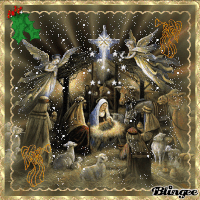
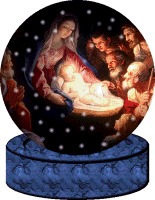
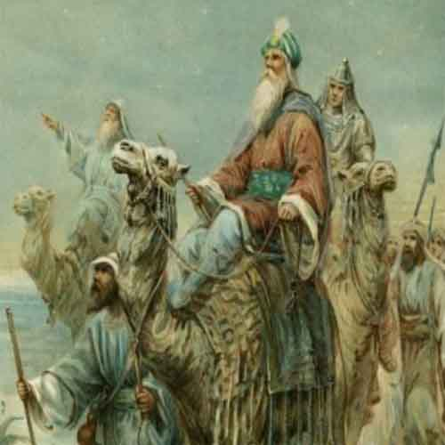
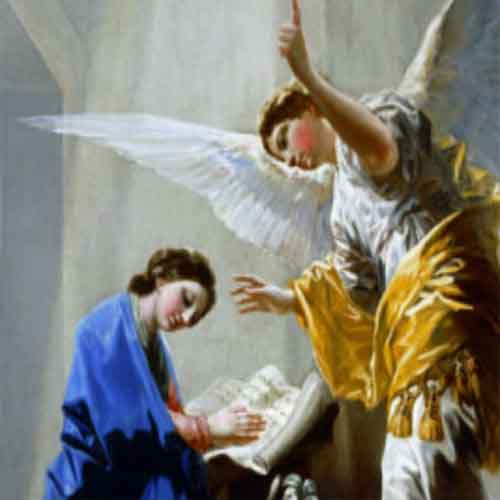
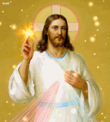
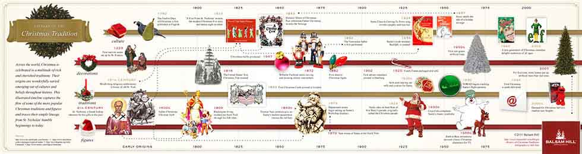
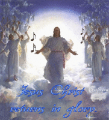
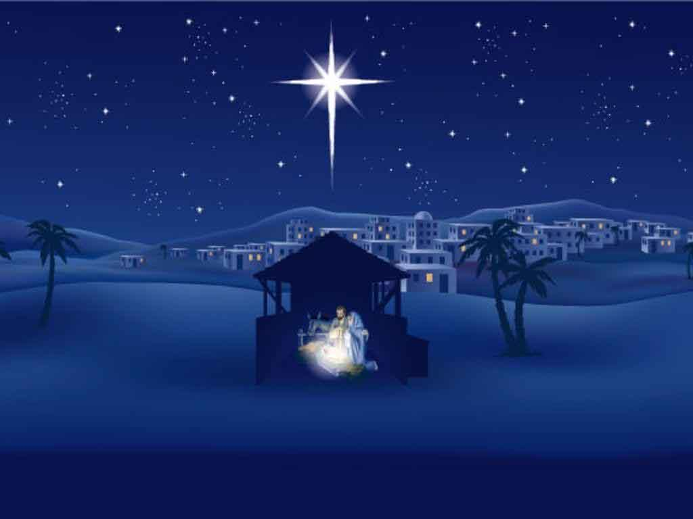

So, when was Jesus Born?
There's a strong and practical reason why Jesus might not have been born in the winter, but in the spring or the
autumn! It can get very cold in the winter and it's unlikely that the
shepherds would have been keeping sheep out on the hills
(as those hills can get quite a lot of snow sometimes!).

During the spring (in March or April) there's a Jewish festival called 'Passover'. This festival remembers when the Jews had escaped from slavery in Egypt about 1500 years before Jesus was born. Lost of lambs would have been needed during the Passover Festival, to be sacrificed in the Temple in Jerusalem. Jews from all over the Roman Empire traveled to Jerusalem for the Passover Festival, so it would have been a good time for the Romans to take a census. Mary and Joseph went to Bethlehem for the census(Bethlehem is about six miles from Jerusalem).

In the autumn (in September or October) there's the Jewish festival of 'Sukkot' or 'The Feast of Tabernacles'. It's the festival that's mentioned the most times in the Bible! It is when Jewish people remember that they depended on God for all they had after they had escaped from Egypt and spent 40 years in the desert. It also celebrates the end of the harest. During the festival, Jews live outside in temporary shelters (the word 'tabernacle' come from a latin word meaning 'booth' or 'hut').

Many people who have studied the Bible, think that Sukkot would be a likely time for the birth of Jesus as it might fit with the description of there being 'no room in the inn'. It also would have been a good time to take the Roman Cenensus as many Jews went to Jerusalem for the festival and they would have brought their own tents/shelters with them! (It wouldn't have been practical for Joseph and Mary to carry their own shelter as Mary was pregnant.) The possibilities for the Star of Bethlehem seems to point either spring or autumn.

The possible dating of Jesus birth can also be taken from when Zechariah (who was married to Mary's cousin Elizabeth) was on duty in the Jewish Temple as a Priest and had an amazing experience. There is an excellent article on the dating of Christmas based in the dates of Zechariah's experience, on the blog of theologian, lan Paul. With those dates, you get Jesus being born in September - which also fits with Sukkot! The year that Jesus was born isn't known. The cleander system we have now was crested in the 6th Century by a monk called Dionysius Exiguus. He was actually trying to create a better system for working out when Easter should be celebrated, based on a new calendar with the birth of Jesus being in the year 1. However, he made a mistake in his maths and so got the possible year of Jesus's birth wrong!

Most scholars now think that Jesus was born between 2 BEC/BC and 7 BEC/BC, possibly in 4 BCE/BC. Before Dionysius's new calendars, years were normally dated from the reigns of Roman Emperors. The new calendar become more widely used from the 8th Century when the ' Venerable Bede of Northumbria' used it in his 'new' history book! There is no year '0'. Bede started dating things before the year 1 and used 1 BCE/BC as the first year before 1. At that time in Europe, the number 0 didn't exist in maths - it only arrived in Europe in the 11th to 13th centuries!

So whenever you clebrate Christmas, remember that you're celebrating a real event that happened about 2000 years ago, that God sent his Son into the world as a Christmas present for everyone! As well as Christmas and the solstice, there are some other festivals that are held in late December. Hanukkah is celebrated by Jews; and the festival of Kwanzaa is celebrated by some Africans and African Americans takes place from December 26th to January 1st. Nothing has ever been the same since the first Christmas and you can find out more about Jesus' life in the Bible.

To Christians, one of the most important things about Christmas os what 'Christmas' really means - the Mass of Christ (or Jesus). Mass (or Communion) is a Christian act of worship when Christians remember that Jesus was not only born, as told in the Christmas story, but that, when he become a man, Jesus willingly died to take away all of our wrongdoings and bring us closer to God. Then he came back to life three days later. Christians celebrate this throughout the year, but especially on Good Friday and Easter Sunday.

Christmas is a christian holiday, devoted to the Birth of Jesus Christ - the Messiah sent by God for the salvation of the world. Its celebration is based on the biblical events, described in the New Testament. The Apostle Luke tells us that after Jesus' birth the Angels appeared to the shepherds and told them this gospel. The shepherds went immediately to the city of Bethlehem and found in the stable of the Virgin Mary, her husband of the carpenter Joseph, and the Babe lying in the manger.

The Christmas story is one of good news and great joy, but it is also quite a short one. There are 27 books in the New Testament part of the Bible, but the story is only told in the books wirtten by Matthew and Luke, two of Jesus' followers and friends. In Matthew, the story is told in two out of the 28 chapters and in Luke, it is told in two chapters out of 24. Both Matthew and Luke finish their telling of the story with Joseph, Marry and Jesus returning to Nazareth to live. But Christians believe that Christmas was only the begining of the amazing life of Jesus.